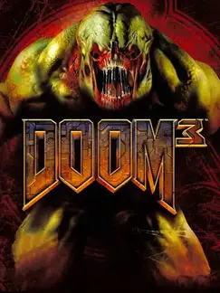

 |
|
| Tiempo de juego | 5m 42s |
| Última actividad | 11/11/2025 8:02:42 |
| Añadido | 27/7/2025 0:57:28 |
| Modificado | 3/12/2025 18:32:21 |
| Estado de finalización | Jugado |
| Librería | Playnite |
| Fuente | |
| Plataforma | PC (Windows) |
| Fecha de lanzamiento | 3/8/2004 |
| Puntuación de la Comunidad | 79 |
| Puntuación de la Crítica | 86 |
| Puntuación de usuario | |
| Género | Shooter |
| Desarrollador | Aspyr Media id Software |
| Editor | Activision Aspyr Media |
| Característica | Co-Operative Multiplayer Single Player |
| Enlaces | Steam |
| Tag | |
Antes de que DOOM (2016) reinventara la masacre, hubo un Doom que se atrevió a ser... diferente. Doom 3 no es un juego de acción de correr y disparar; es un survival horror con todas las letras. Es un viaje lento, metódico y claustrofóbico a la oscuridad que en su día nos partió la cabeza y generó un quilombo bárbaro entre los fans.
Acá, id Software cambió la velocidad por la atmósfera. Te metieron en una base en Marte más oscura que boca de lobo, con pasillos angostos donde el sonido de tus propios pasos te pone la piel de gallina. No vas corriendo como un desquiciado, vas caminando despacio, cagado en las patas, apuntando tu linterna a cada esquina y esperando el próximo Imp que te salte de una sombra.
Y acá vino la mecánica que definió el juego y generó el debate: la linterna. En la versión original (esta), o tenías la linterna para ver, o tenías el arma para disparar. ¡No podías las dos cosas a la vez! Esta decisión de diseño, que hoy parece una locura, te obligaba a entrar a cada cuarto a ciegas, escuchar un gruñido, cambiar al arma y disparar a la oscuridad. Pura tensión. (La posterior 'BFG Edition' te "arregló" esto con una linterna en el hombro, pero la experiencia original era esa).
Todo esto fue posible gracias al motor gráfico id Tech 4, una bestialidad para la época. La iluminación y las sombras dinámicas en tiempo real eran de otro planeta. Era EL juego que usabas en 2004 para demostrar la potencia de tu nave y dejar a tus amigos con la boca abierta.
No es el mejor 'Doom', pero es un JUEGAZO de terror espectacular. Una clase magistral de atmósfera y tensión. Si lo jugás como se debe —a oscuras y con auriculares al palo—, te vas a pegar unos julepes memorables.
• dhewm 3 - Port de la comunidad para que sea jugable en sistemas actuales